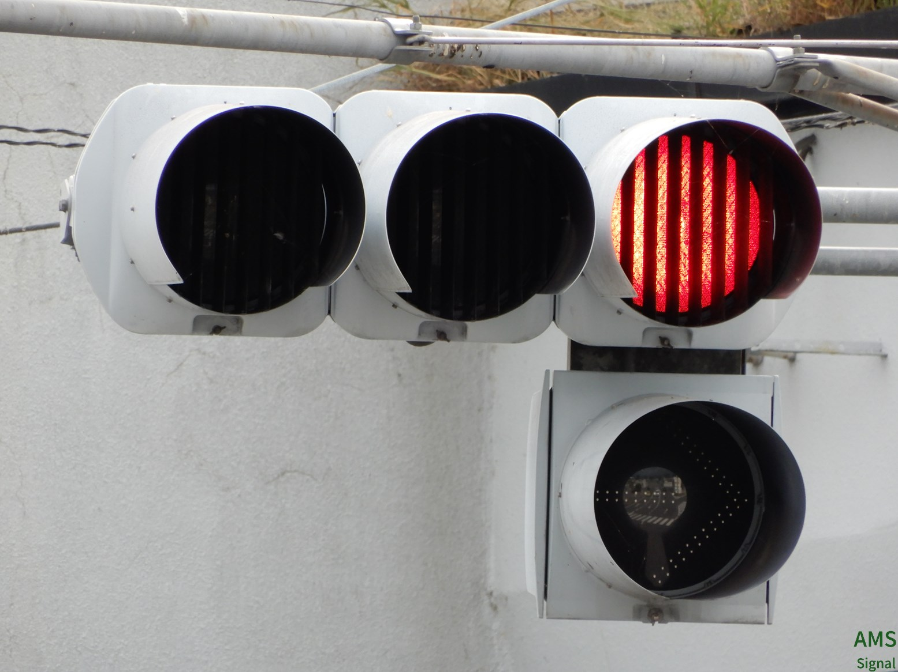

ようこそ、AMS Signalへ！
◇リンク集はこちら◇
⚠当サイトの画像等の無断転載はおやめください。▼
改装直後のため、掲載画像や情報は必要最低限となっています。ご了承ください。
1.長野県
中央一丁目（松本市）

堀金（安曇野市）

左右視覚制限バズーカです。交差点が3差路でそのうちの2本がV字に交わるため設置されています。^～～～～～～更新＆新設情報
更新、新設前更新後

©2022 AMS-Signal Project By Gasukaku. All Rights Reserved.
このサイトではアクセス分析を目的としてGoogle社の「Googleアナリティクス」を使用しています。(これは個人を特定できるものではありません。また、Googleアナリティクスオプトアウトアドオンを利用することによりGoogleアナリティクスを無効にすることができます。)トップへ↑